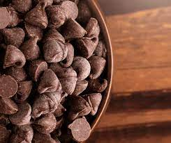
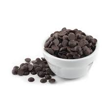

What is Semi-Sweet Chocolate?
To understand more about what semi-sweet chocolate is, it’s helpful to know a little about how chocolates are classified. White chocolate is the sweetest and distinctive in that it doesn’t contain cocoa solids. Milk chocolate has a mild flavor and 25 to 35% cocoa solids. Semisweet, bittersweet and bitter are the three classifications of dark chocolate.
Characteristics of Semisweet Chocolate
Semi-sweet chocolate has a cocoa solid content of 35 to 65%. One of the best ways to gain an understanding of this type of chocolate is to compare it to a different type of chocolate. In a visual comparison, semisweet is darker than milk chocolate. In a taste comparison, it has a slightly bitter taste whereas milk chocolate is sweeter and more mellow. This delectable flavor of chocolate is very versatile. It can be used interchangeably in recipes as a substitute for milk chocolate or bittersweet chocolate.
Using Semisweet Chocolate
Semisweet chocolate chunks, chips, blocks and pieces are typically found in a baker’s pantry. The ways to use these pieces of chocolate in baked goods and other culinary creations is almost limitless. The level of sweetness or bitterness in various types of chocolate varies according to the amount of sugar a specific brand’s recipes uses.
Health Benefits of Semisweet Chocolate
This highly popular, delectable type of chocolate not only pleases the palate, it provides amazing health benefits. Add some chocolate chunks of semisweet deliciousness to your homemade snack mix or simply enjoy the chunks as a snack by themselves. By doing so, you’ll boost your brain health which can help you stay sharp and alert. You’ll also be getting support for your heart health. You’ll be acquiring beneficial magnesium which can aid in reducing inflammation. Most people prefer not to show signs of aging. Consuming a moderate amount of chocolate, especially the darker types of chocolate, will provide antioxidants that can help prevent age-related health issues. Chocolate can help you maintain healthy cholesterol levels and good blood pressure. The calcium and potassium in dark chocolate can help support bone health. One key reason for adding semisweet dark chocolate to your is that it can improve your mood. Chocolate is a “feel good” food.
Dark and slightly bitter semi-sweet chocolate chips or pieces are a favorite recipe ingredient for bakers and a healthy and delicious snack item.